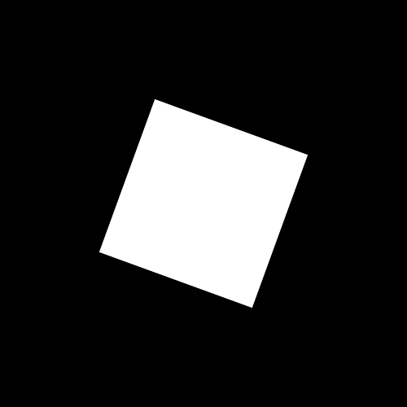
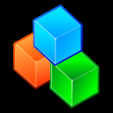
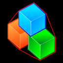
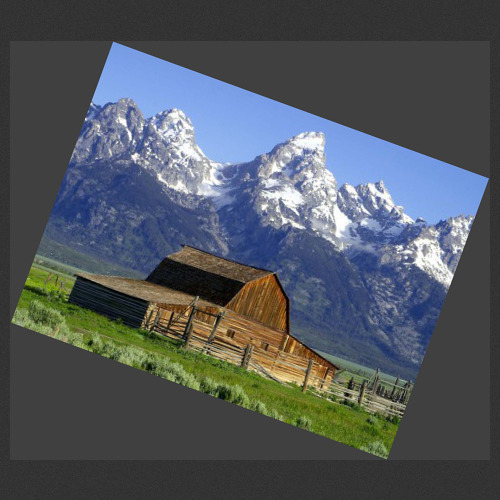
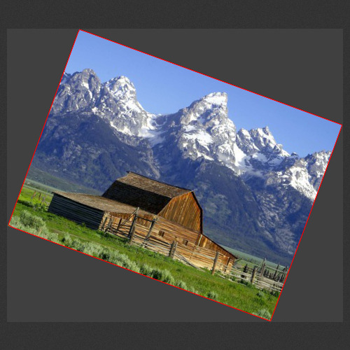

Identify Image Foreground Objects
Convex Hull • Minimum Bounding Box • Unrotate an Image
The convex hull is the is the smallest area convex polygon containing the set of points inside it. The convex hull may be visualized as the shape enclosed by a rubber band stretched around the set of points.
The convex-hull string format returns a list of x,y coordinates of the vertices of the convex-hull polygon containing all the non-black pixels within it.
magick [-fuzz value%] [-background background-color] -format "%[convex-hull]" info:
Use %[convex-hull:extreme-points] to only return the top, right, bottom, and left extreme points.
where the string format is sensitive to an optional -fuzz value and to an optional background color specified by the define. The command above will find the background color automatically according to the fuzz value unless the background color is defined. The fuzz value defaults to 0 when not specified.
For example, consider the following white rectangle on a black background:
- 
The convex hull set of points may be computed as:
magick rect.png -format "%[convex-hull]" info: 190,121 193,122 281,154 377,189 378,190 377,193 345,281 310,377 309,378 306,377 218,345 122,310 121,309 122,306 154,218 189,122 190,121
The convex hull may also be drawn as a polygon (filled or unfilled) using -draw as follows:
magick rect.png -set option:hull "%[convex-hull]" -fill none -stroke red -strokewidth 1 -draw "polygon %[hull]" blocks_hull.png
Here is an example using a non-convex shaped image on a black background:
- 
magick blocks_black.png -set option:hull "%[convex-hull]" -fill none -stroke red -strokewidth 1 -draw "polygon %[hull]" blocks_hull.png
- 
Finally, here is an example with a non-constant, non-black background using -fuzz to determine the background color:
- 
Now let's highlight the convex hull of the image foreground object:
magick barn_rot20.png -fuzz 10% -set hull "%[convex-hull]" -fill none -stroke red -strokewidth 1 -draw "polygon %[hull]" barn_rot20_hull.png
- 
Minimum Bounding Box
Similar to the convex hull of the image foreground object(s), is the minimum bounding box. Use %[minimum-bounding-box] to return the points that make up the bounding box. In addition, these properties are set: minimum-bounding-box:area, minimum-bounding-box:width, minimum-bounding-box:height, and minimum-bounding-box:angle.
magick barn_rot20.png -fuzz 10% -background gray25 -set MBR "%[minimum-bounding-box]" -fill none -stroke red -strokewidth 1 -draw "polygon %[MBR]" barn-mbr.png
Unrotate an Image
Use %[minimum-bounding-box:unrotate] to correct for any rotation the image may exhibit. Unless you specify the image orientation, the unrotate angle should properly align the image to the correct coordinate axis for angles <= 45. For angles > 45, the image will align with the wrong coordinate axis. Set the correct image orientation to ensure the proper unrotate angle is returned. Use -define minimum-bounding-box:orientation={landscape,portrait} to set the image orientation. Note, that like convex-hull, the string format is sensitive to an optional -fuzz value and an optional -background color.
The barn image above is rotated by 20 degrees. Here is how we can automatically correct for the rotation and return it to its original landscape orientation:
magick barn_rotate20.jpg -fuzz 15% -set option:angle "%[minimum-bounding-box:unrotate]" -background gray -rotate "%[angle]" -trim barn_unrotate.jpg